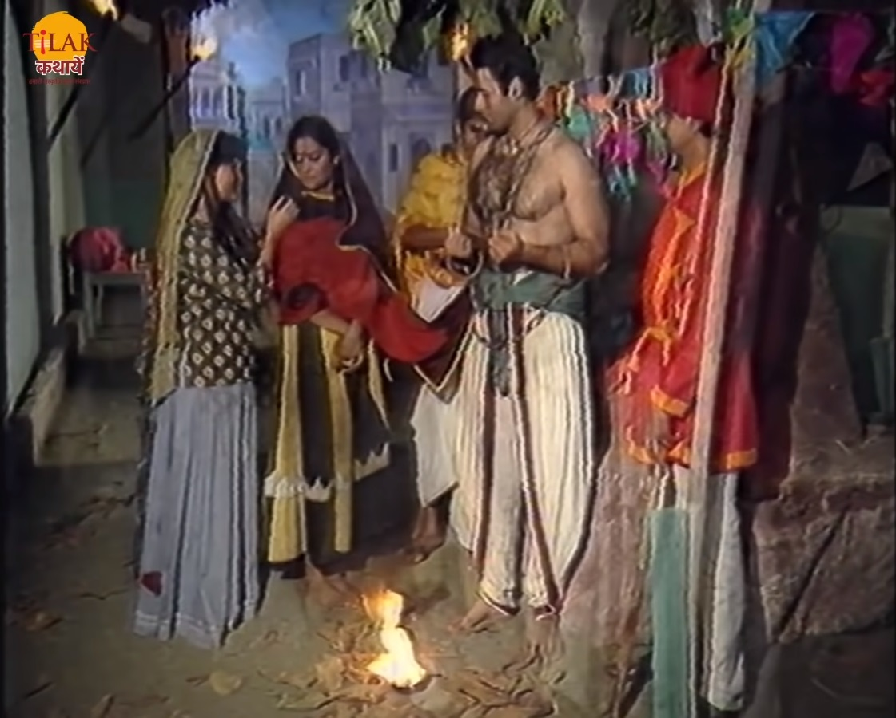
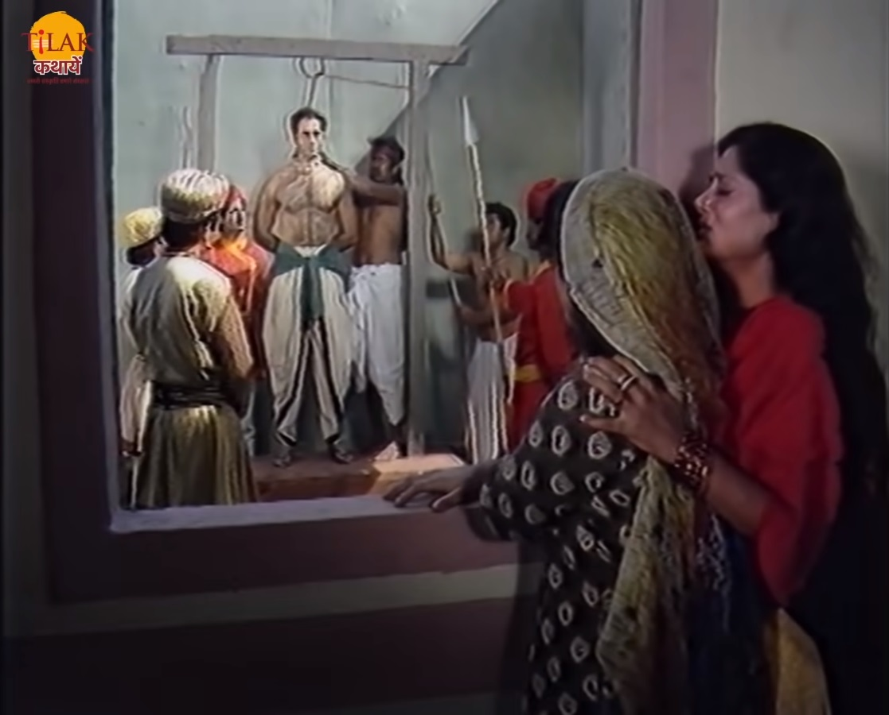
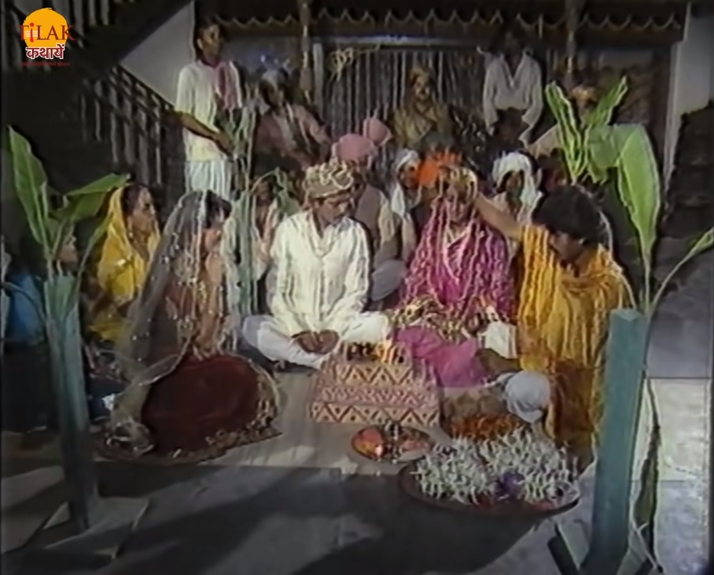
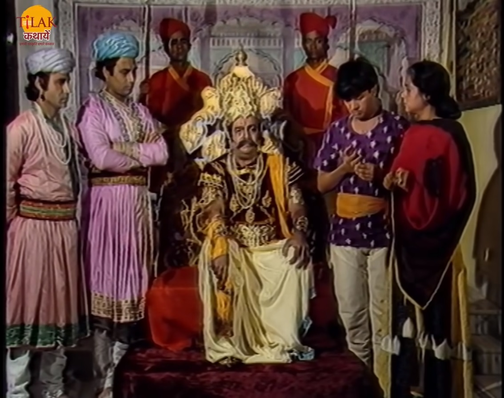

|  | बेताल को विक्रम फिर से पकड़ता है और ले चलता है बेताल फिर से उसे एक कहानी सुनता है जिसमें एक विधवा औरत भागवती और उसकी बेटी अपने दुर्भाग्य के कारण एक नगर से दूसरे नगर में भटक रही थी। दोनों माँ बेटी एक नगर में रात होने पर रुक जाती है तो वहीं एक सिपाही एक चोर को पकड़ कर सुबह होने का इंतज़ार कर रहा था ताकि उसे राजा के सामने पेश कर सके। दोनों माँ बेटी सिपाही के पास जाती है और उस से पीने के लिए पानी माँगती हैं तो सिपाही उसे एक मटके से पानी लेने के लिए कह देता है। वह चोर भी भागवती से पानी पिलाने के लिए कहता है। भागवती पानी लाती है और अपनी बेटी को पिलाती है। धनवती चोर को पानी पिलाती है तो चोर भागवती से कहता है की तुम्हारी बेटी कुँवारी है इसकी शादी मुझसे कर दो तो भागवती उसे धमका देती है। राजा का सिपाही चोर को कहता है की तुझे कल फाँसी होने वाली है और तुझे शादी करने की पड़ी है तो चोर कहता है की वो शादी सिलिए करना चाहता है ताकि उसे मारने से पहले कोई पानी पिलाने वाला तो हो ताकि उसे मुक्ति मिल सके। सिपाही उसे चुप करा देता है और पानी पीने के लिए चला जाता है वह चोर सिपाही के जाते ही भागवती से कहता है की वो अपनी बेटी की शादी उस से करा दे तो वह अपनी सारी सम्पत्ति और छुपाए हुए धन का पता उसे बता देगा और वो अपना सारा जीवन आँचें से बिता पाएँगी। |  |
| भागवती कहती है की चल मैं तेरी बात मान लेती हूँ तो हमारा भाग्य तो संवर जाएगा लेकिन इसमें तेरा क्या फ़ायदा है तो वह कहता है की में धनवती का पति बं जाऊँगा तो उस से जो मेरा पुत्र होगा वो मेरे मारने के बाद मेरा पिंड दान कर देगा जिस से मैं प्रेत योनि में जाने से बच जाऊँगा। भागवती उसकी बात मान लेती है। वह चोर सिपाही के आने पर उसे दो सोने की मोहरे देता है और कहता है की सामने के घर में पंडित रहता है उसे बला लाए और उसका विवाह धनवती के साथ करा दे तो सैनिक उनकी बात मान लेता है। पंडित आकर दोनों की शादी करा देता है। चोर धनवती को को ख़ज़ाने के पता बता देता है और अगले दिन सुबह चोर को फाँसी दे दी जाती है। भागवती और धनमती सारा धन खोज लेते हैं और आमिर होकर जीवन बिताने लगते हैं। समय बीतने पर भागवती अपने बेटी की शादी के लिए रिश्ते खोजती है भागवती अपनी बेटी और उसके पति को अपने साथ रखना चाहती थी। भागवती को एक लड़का मिल जाता है तो वह दोनों की शादी भी कर देती है। लेकिन वह लड़का शादी के बाद पहली रात में ही सारा धन और उनकी दौलत चुरा कर भाग जाता है। दोनों माँ बेटी को दुःख होता है आऊर वो याद करती हैं की एक चोर ने उन्हें बसाया था और दूसरे ने लूट लिया। यह सदमा भानमती शान नहीं कर पाती और मर जाती है। |  | .
|  | एक दिन वो एक नगर में भटक रहे थे की उन्हें एक राजकुमार दिखता है जिसे एक अजगर ने जकड़ा हुआ था धनमती का बेटा उसे बचाने की कोशिश करता है लेकिन राजकुमार नहीं बचा पाता। राजा वहाँ आकर यह सेब देख लेते हैं तो राजा उन माँ बेटे को अपने साथ राजमहल में ले जाता है और धनमती से उसके बेटे को गोद ले लेता है। धनमती के बेटे को शिक्षा दीक्षा दी जाती है और राजकुमार बना दिया जाता है। कुछ समय बाद राजा की तबियत खारब हो जाती है तो राजा धनमती के बेटे को बुलाता है और उसे कहता है की मेरे बाद तुम्हें इस राज्य का राजा बानकर इस राज्य की रक्षा करनी होगी यह कर राजा मर जाता है। धनमती का पुत्र राजा बन जाता है। |
धनमती अपने बेटे को कहती है की तुम्हें अपने पिता का पिंड दान करना होगा ताकि उन्हें शांति मिल सके। धनमती और उसका बेटा पिंड दान करने के लिए जाते हैं। अब बेताल विक्रम से पूछता है की अब मुझे ये बता की उस लड़के का पिता कौन है और वो किसका पिंड दान करेगा। विक्रम बेताल को बताता है की उस लड़के का असली पिता वह चोर है जिसने धनवती से विधि पूर्वक विवाह किया है। क्योंकि उस युवक ने धनवती से से विवाह लालच में किया था और राजा ने अपना कर्तव्य पूरा किया है इसलिए धनवती का बेटा चोर को ही पिता मानेगा और उसका ही पिंडदान करेगा। राजा विक्रम का उत्तर सुन कर बेताल फिर से उड़ जाता है और वापस अपने पेड़ पर जाकर लटक जाता है।
| Previous Story | Home | Next Story |